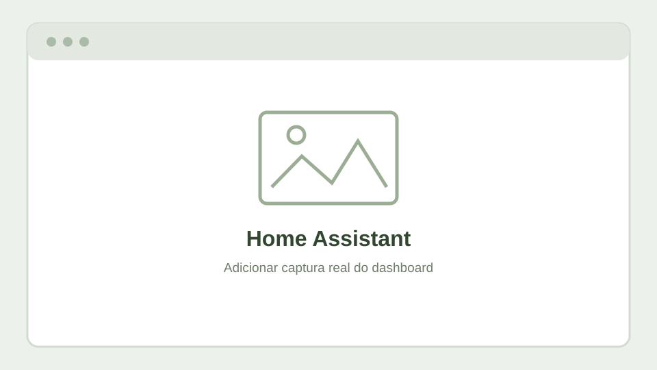
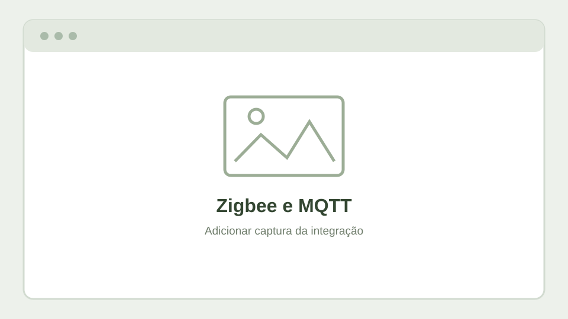

O projeto
O Home Assistant centraliza estados, dashboards e automações. O laboratório permite experimentar integrações locais, comunicação MQTT e dispositivos Zigbee, procurando reduzir dependências de serviços externos.

Tecnologias relacionadas
Integrações
- Home Assistant para controlo e automações.
- Zigbee2MQTT para comunicação com dispositivos Zigbee compatíveis.
- Mosquitto como broker MQTT.
- Dashboards para consulta do estado dos equipamentos e das rotinas.
- Integração de UPS e monitorização energética como áreas de teste.
Exemplo de automatização
- Um sensor comunica um novo estado à plataforma através da integração correspondente.
- Uma automatização compara o estado recebido com as condições definidas.
- Quando as condições são cumpridas, é enviado um aviso ou executada uma ação configurada.
Exemplo genérico de funcionamento; os dispositivos e as automações concretas serão documentados com capturas reais.
